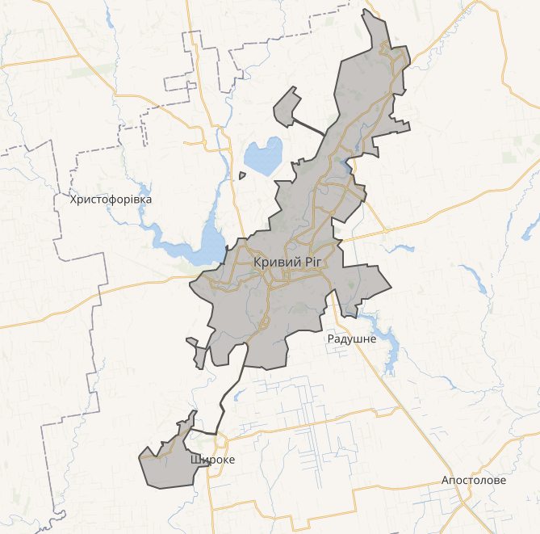

Місто розташоване у степовій зоні України, на злитті річок Інгулець, Саксагань і Балки Червоної, які входять до басейну Дніпра. Територія околиць розчленована численними балками (Зелена, Березнеговата, Червона, Макортова, Галахова, Лозуватка, Грушевата, Петрикова, Красна, Рокувата, Суха, Гливата, Дубова, Вовча, Суслова, Кобальска, Калетіна, Крутий Яр, Приворотна та інші). У місцях виходу корінних порід схили річкових долин круті. У період танення снігу і після дощів днищами балок протікають тимчасові водостоки. Стік Інгульця зарегульований Карачунівським водосховищем, стік Саксагані — Кресівським водосховищем, Саксаганським і Макортівським водосховищами. Абсолютні позначки поверхні водоймищ коливаються від 30 до 160 м. Переважні позначки поверхні становлять 50–100 м абс., мінімальні — характерні для заплавних ділянок річкових долин і становлять 30–45 м абс. Долина Інгульця в межах міста переважно V-подібна, схили долин заввишки 25–35 м круті. Річище звивисте, але нерозгалужене, шириною 40–60 м, глибиною на перекатах 0,2–0,6 м, на плесах — до 5,0 м. Швидкість течії річки на плесах незначна. У зимовий період замерзає. Середні дати початку льодоставу до глобального потепління клімату в останні 20 років припадали на 7–12 грудня, число днів з льодовими явищами 110—115. Товщина льоду сягала 20–35 см. Скресала річка 14–16 березня. Зараз через теплі зими льодостав на річці нестійкий, малопотужний. Долина річки Саксагані в межах міста переважно трапецеїдальна, заплава відкрита, лугова суха. Має 28 приток. Річка належить до категорії малих річок. Переважна ширина заплави 100—200 м. У період весняного повіддя заплава затоплюється на глибину 1,0–1,5 м. Річище річки нерозгалужене, переважна ширина його 20–40 м. Швидкість течії незначна. Природний режим річки сильно змінено регулювальним впливом гребель, скиданням шахтних і промислових вод, а також забором води на технічні потреби. На ділянці «шахта „Саксагань“—Чорногорка» річка переведена в підземний колектор (Саксаганський дериваційний тунель). Сучасне гирло річки розташоване в районі селища Чорногорка — нижче на 1,5 км від природного гирла в районі парку Мершавцева. До міста підведено Канал Дніпро — Інгулець та Канал Дніпро — Кривий Ріг. Загальний напрям стоку підземних вод Криворіжжя — на південь — в бік Причорноморської тектонічної западини, а також до місцевого базису ерозії — річкових долин, балок, ярів, подів, тому місцями виникають джерела (природний вихід підземної води на земну поверхню, наприклад в районі скель МОДРу, у балці Гандибіна, на березі Кресівського водосховища в парку та ін.) та мокрини (місця просочування підземних вод на денну поверхню у вигляді сильно змоченого ґрунту). За офіційними даними Криворізької міської ради довжина міста на 1956 рік становила 126 км (разом з РУ Жовта Річка). Водночас за емпіричними даними — 58 км, не враховуючи колишнє місто Інгулець; з Інгульцем — 81,5 км, враховуючи 13,4 км Широківського шосе по території, що не належить місту; відстань між крайніми точками по прямій — 66 км.
